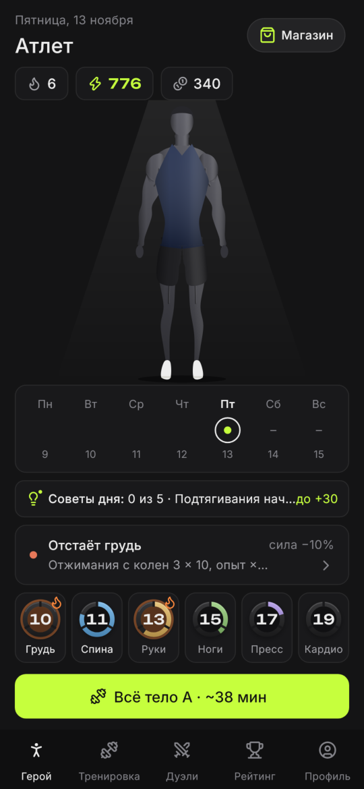
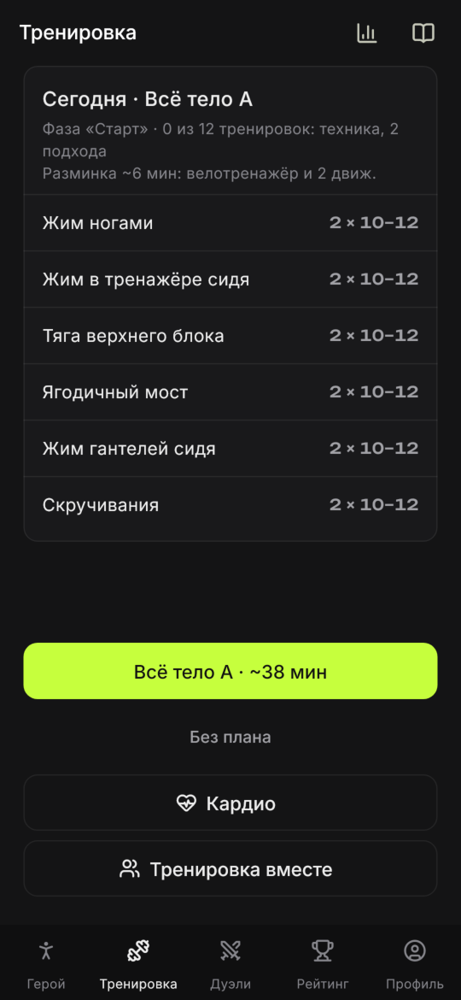
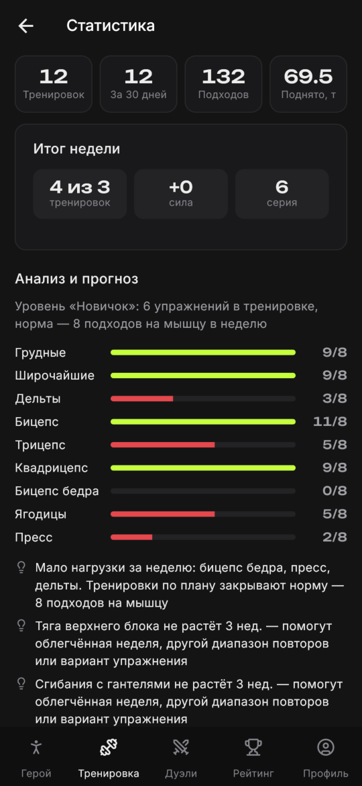
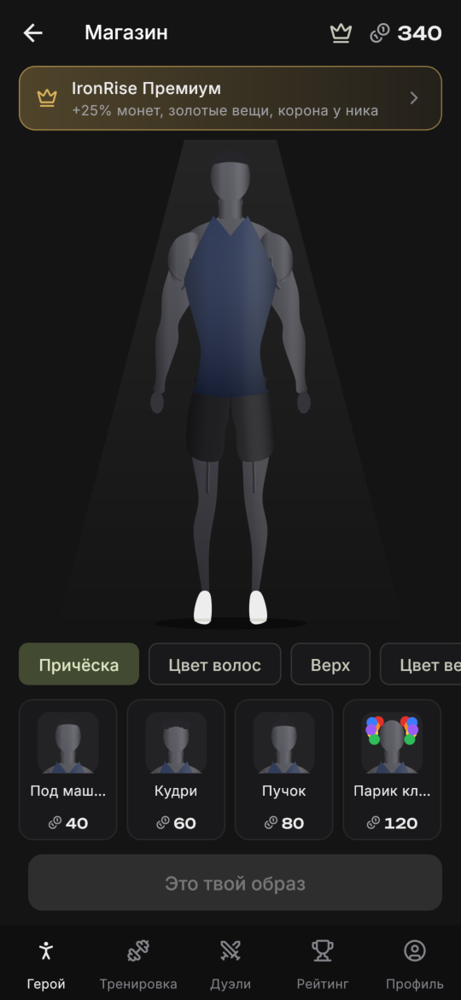

Тренируйся —
твой герой растёт
IronRise — фитнес-RPG. Программа под твой уровень, проверка тренировок по пульсу с часов, дуэли, лиги и сезоны. Каждая мышца героя растёт от твоих настоящих упражнений.

Возможности
Серьёзные тренировки внутри — игра снаружи.
Программа под тебя
От 6 базовых упражнений для новичка до 8 сложных для опытного. Подходы разложены так, чтобы каждая мышца получила недельную норму.
Честно по пульсу
Часы Wear OS или датчик передают пульс, сервер сверяет его с подходами. Настоящая тренировка — полный опыт.
Анализ и прогноз
Нагрузка на мышцы за неделю, плато, прогноз результатов на месяц и три. Вес и состав тела с часов.
Дуэли и ауры
Бои с ботами и друзьями решает сила героя. Ауры — ярость, стойкость, скорость и фокус — прокачиваются особыми тренировками.
Лиги и сезоны
Недельные лиги с живыми игроками, сезоны по 8 недель и батлпас: 30 уровней наград и сезонная одежда.
Стиль героя
Оверсайз, шаровары, карго, маллет, вульфкат, цепи и банданы. Монеты — только за тренировки, силу не купить.
Как это работает
Три шага — и герой начинает расти.
Создай героя, укажи опыт и график — приложение соберёт программу под твой уровень.
Тренируйся по плану: записывай подходы, а часы передают пульс и подтверждают тренировку.
Смотри, как растёт герой, бери уровни сезона и побеждай в дуэлях и лигах.
Экраны
Так выглядит IronRise на телефоне.



Что нового и что дальше
Сейчас — версия 1.3. Обновления выходят каждые 1–2 недели.
Версии 1.2–1.3 — уже вышли
Входная тренировка и план по силам, несколько целей и свой путь у каждой, любой стиль и любые дни тренировок без перегрузки мышц, формат «Минимум» с днями восстановления, тренировки без интернета, инструкции для часов Huawei, Garmin, Polar, COROS и Amazfit, честный античит.
Сезон 2 и новые лиги
Новый сезон с 28 декабря: свои награды и одежда. Больше лиг, можно заглянуть в чужие. Графики прогресса, нормы пульса по упражнениям.
Публичный запуск
19–20 января — IronRise для всех в RuStore. До этого — полировка по отзывам бета-тестеров.
Дальше
Премиум с пробным месяцем, новый облик героя и анимации, ЛФК и сон, команды и Google Play.
Частые вопросы
Если не нашёл ответ — напиши нам.
Нужны ли часы?
Нет, тренироваться можно и без них. С часами Wear OS или датчиком пульса тренировка подтверждается и даёт полный опыт, без них — примерно половину. Тренировки аур засчитываются только с пульсом.
Какие часы подходят?
Galaxy Watch и другие часы на Wear OS 3 и новее — через наше приложение для часов. Остальные — через Health Connect, если их приложение пишет туда пульс. Подойдёт и Bluetooth-датчик пульса.
Я никогда не тренировался. Мне подойдёт?
Да. Новичок начинает с фазы «Старт»: 6 простых упражнений по 2 подхода, акцент на технике. Сложность растёт вместе с результатами.
Можно тренироваться дома?
Да. Выбери «Дома с гантелями» — программа подберёт упражнения без тренажёров.
Почему тренировка дала мало опыта?
Скорее всего, не было пульса или он не совпал с подходами. Ещё есть дневной потолок: одна силовая и одно кардио в день.
Что такое ауры?
Способность для дуэлей, срабатывает один раз за бой. Прокачивается короткими тренировками по 8–10 минут — не чаще раза в день и двух раз в неделю.
Что такое сезон и батлпас?
Сезон длится 8 недель. За тренировки, дуэли и советы идут очки, за уровни — монеты, бустеры и сезонная одежда. С премиумом открывается вторая дорожка наград.
Можно ли купить силу?
Нет. За монеты и премиум — только внешний вид и удобства. Сила героя растёт только от тренировок.
Что будет с моими данными о здоровье?
Пульс и состав тела используются только с твоего отдельного согласия. Большая часть данных хранится на телефоне, на сервер уходит только нужное. Аккаунт и данные можно удалить в настройках.
Нужен ли аккаунт?
Тренироваться можно без него. Аккаунт нужен для дуэлей, лиг, сезона, друзей и чтобы прогресс не потерялся при смене телефона.
Стань бета-тестером
IronRise сейчас в закрытой бете. Вступай в Telegram-канал — там новости, свежие сборки для телефона и часов и обратная связь.
Вступить в канал Написать на почту